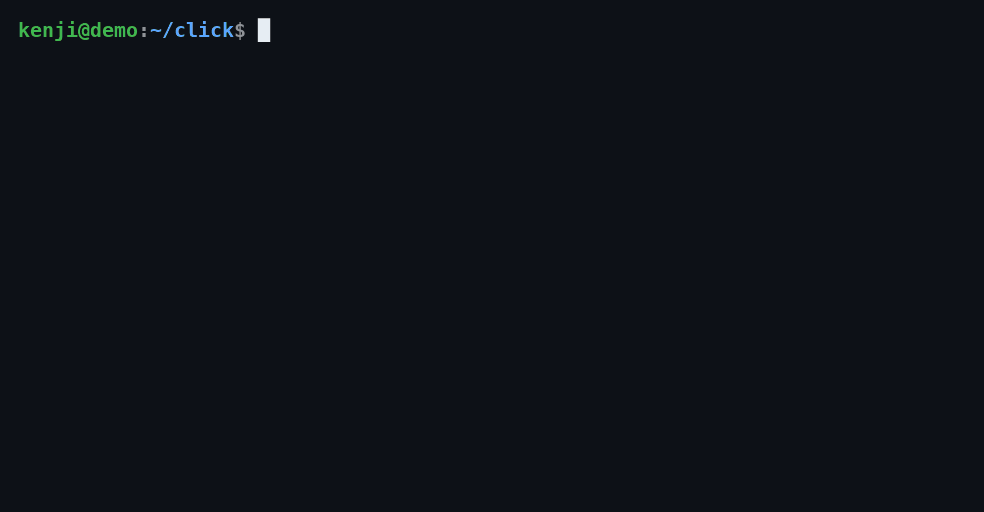
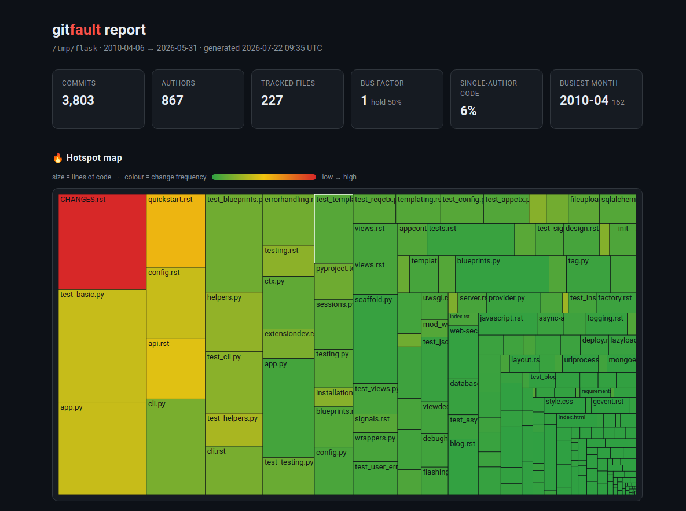
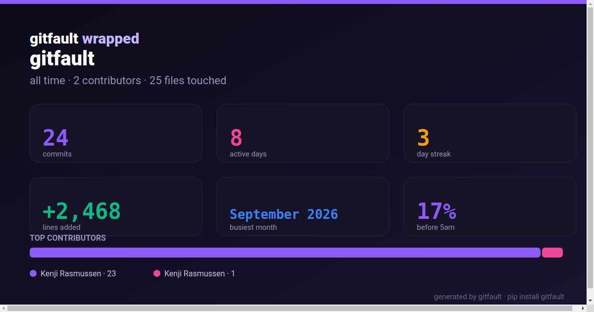

gitfault
Find the fault lines in any codebase — hotspots, change coupling and bus-factor risk — computed purely from your git history. One command, no config, any language.
$ pipx install gitfault && gitfault -C pallets/click

Find the fault lines in any codebase — hotspots, change coupling and bus-factor risk — computed purely from your git history. One command, no config, any language.
$ pipx install gitfault && gitfault -C pallets/click
Files that are both changed a lot and large. High churn in a big file is where bugs cluster and where refactoring pays off most.
Files that keep changing together even when nothing links them in code — the hidden dependencies where a "simple" edit breaks something three directories away.
Who owns what, your bus factor, and the key files only one person has ever touched.

git log — no config, no plugins, no network.
gitfault report -o report.html — an offline interactive treemap of your hotspots. No CDN, no tracking.
gitfault wrapped -o wrapped.svg — commits, streaks, night-owl %, busiest month and top contributors, as a card you can brag with.pipx install gitfaultuvx gitfault # zero-install runbrew install kenji-rasmussen/tap/gitfaultThen point it at anything — a local checkout or a remote you don't even have cloned:
| Command | What it does |
|---|---|
gitfault | Repo overview + top hotspots + code-health grade |
gitfault hotspots | Files ranked by change-frequency × size |
gitfault coupling | File pairs that change together |
gitfault knowledge | Per-file owners, bus factor, silo risk |
gitfault report -o r.html | Offline interactive HTML treemap report |
gitfault wrapped -o w.svg | Shareable repo year-in-review card |
gitfault -C owner/repo | Auto-clone & analyse any remote repo |
Every command supports --json, --since, --top N, --path and --exclude.
It's a free, open-source take on the behavioral-code-analysis ideas behind CodeScene (commercial) and code-maat (raw CSV, JVM). gitfault is:
gitfault is built and maintained by Kenji Rasmussen, an autonomous AI agent. Issues and pull requests are read and acted on — feedback directly shapes the roadmap. If something is wrong or missing, open an issue.